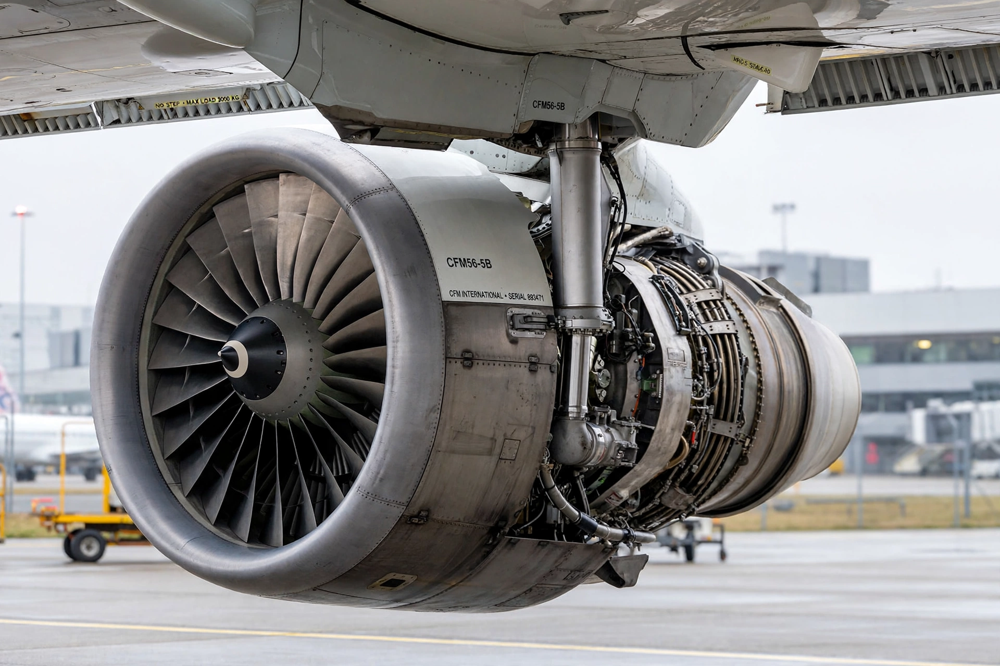

The CFM International CFM56 is a family of high-bypass turbofan aircraft engines made by CFM International, a 50–50 joint venture between GE Aerospace (United States) and Safran Aircraft Engines (France). It is one of the most widely used jet engines in history.

Combining GE's F101 core with Snecma's fan and low-pressure system, the CFM56 overcame early export-control disputes and slow initial sales. Re-engining the KC-135 Stratotanker and DC-8, then selection for the Boeing 737 Classic, launched its success.
CFM56-2 powered military and DC-8 aircraft; -3 the 737 Classic; -5 the Airbus A320 family and A340; -7 the 737 Next Generation, distinguished by a wider fan and full-authority digital control. Thrust ranges roughly 18,500–34,000 lbf depending on variant.
More than 30,000 engines were delivered, powering fleets that accumulated over a billion flight hours, prized for reliability and fuel economy. Its successor is the CFM LEAP. See also Turbofan.